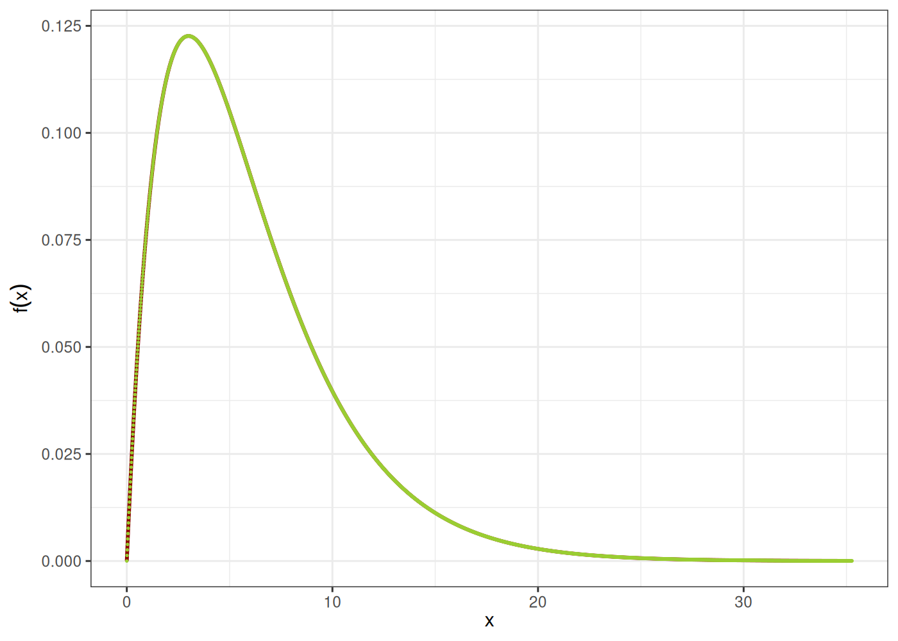
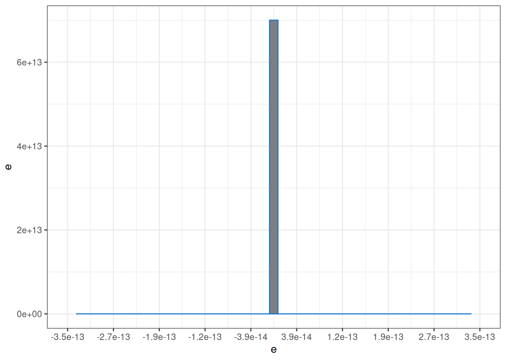
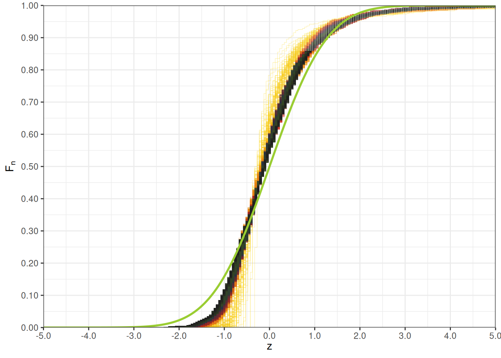
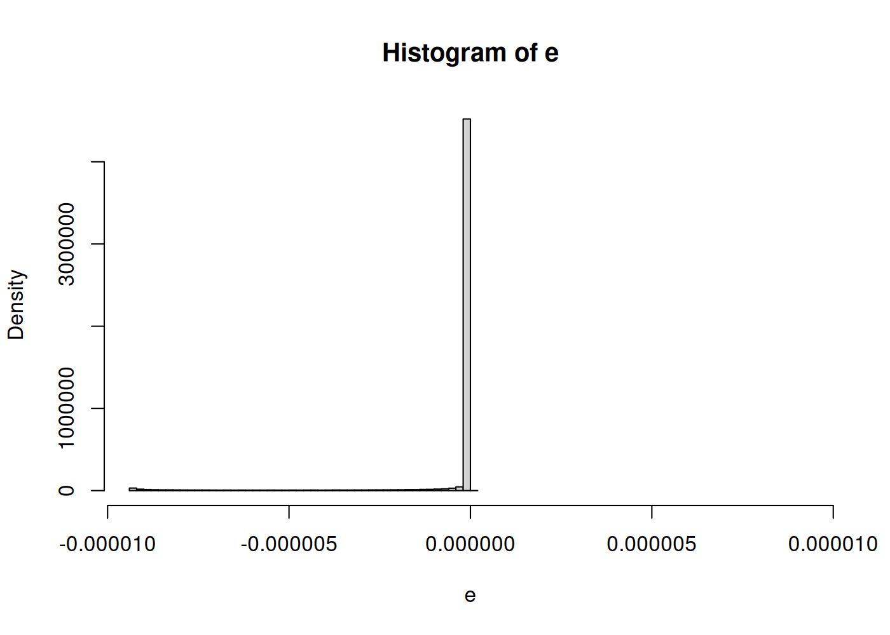

Capítulo 3 Probabilidad y Estadística
Antes de introducir algunos conceptos necesarios para nuestro estudio, necesitamos de algunos conceptos de base.
3.1 Probabilidad y conceptos asociados
Definición 3.1 (Conceptos base) En breves términos, utilizaremos los siguientes conceptos
Un fenómeno es un hecho que puede ser observado.
Un fenómeno estocástico es un fenómeno sobre el que se realiza un experimento que puede arrojar más de un resultado posible.
Un experimento es la observación de un fenómeno bajo condiciones específicas.
Un resultado es la información obtenida de un experimento.
En relación a lo anterior, también tenemos estas definiciones ya más formales.
Definición 3.2 (Espacio muestral y eventos) El conjunto de todos los resultados lo denominamos espacio muestral y usualmente lo notamos por \(\Omega\).
Un evento es un conjunto de uno o más resultados posibles. En pocas palabras un evento \(A\) es un subcojunto de \(\Omega\), i.e. \(A \subset \Omega\).
En algunas ocasiones, para dar mayor precisión a la naturaleza de los eventos, si este está asociado a un fenómeno estocástico se denomina evento contingente.
No todos los subconjuntos de \(\Omega\) necesariamente son un evento, usualmente hay subconjuntos que no pueden resultar de un experimento. Así, si agrupamos todos los eventos usualmente tenemos un conjunto menor a las partes \(\mathcal{P}(\Omega)\) de \(\Omega\). El conjunto de todos los eventos se conoce como una álgebra de eventos, \(\sigma\)-álgebra o tribu. Usualmente se la nota por \(\mathcal{F}\), es claro que \(\mathcal{F} \subset \mathcal{P}(\Omega)\).
El álgebra de eventos, se denomina así, ya que usualmente es cerrada para algunas operaciones de conjuntos. Tiene las siguientes propiedades:
Todos los resultados de espacio muestral están en \(\mathcal{F}\), es decir \(\Omega \in \mathcal{F}\)
El complemento de un evento también es parte de \(\mathcal{F}\), es decir si \(A \in \mathcal{F}\), entonces \(A^c = \Omega \setminus A \in \mathcal{F}\).
La unión de eventos es un evento, si \(A, B \in \mathcal{F}\), entonces \(A \cup B \in \mathcal{F}\),
Aunque redunde, la intersección de eventos es un evento, si \(A, B \in \mathcal{F}\), entonces \(A \cap B \in \mathcal{F}\).
Definición 3.3 (Medida de probabilidad) La probabilidad es una medida de las posibilidades de que ocurra un evento contingente que toma valores en \([0,1]\). Formalmente, la probabilidad se la define como una medida, esto es una función de conjuntos \[ P: \mathcal{F} \longrightarrow [0,1] \] sobre los eventos \(\mathcal{F} \subset \mathcal{P}( \Omega )\) del espacio muestral \(\Omega\).
Si \(A, B \in \mathcal{F}\) son disjuntos \(A \cap B = \emptyset\), entonces \(P( A \cup B ) = P( A ) + P( B )\)
\(P( \Omega ) = 1\)
\(P( \emptyset ) = 0\)
Para cualquier par de eventos \(A, B \in \mathcal{F}\), la probabilidad condicional de \(A\) dado \(B\), está dada por: \[ P( A \mid B ) = \frac{P( A \cap B)}{P(B)} \]
Una propiedad sobre sobre \(\Omega\) viene caracterizada por una función de verificación \(V : \Omega \longrightarrow \{0,1\}\) de tal forma, se dice que un evento \(A \in \mathcal{F}\) satisface la propiedad dada por \(V\) si \(V(\omega) = 1\), para todo \(\omega \in A\). Entonces decimos que se satisface la propiedad en \(V\) en casi en todas partes o casi seguramente si para todo evento \(N \in \mathcal{F}\) que no satisfaga \(V\) mantiene una medida nula, es decir \(P( N ) = 0\) y para cualquier \(\omega \in \Omega \setminus N\) se satisface \(V\), \(V( \omega ) = 1\). En otras palabras en ciertos experimentos hay resultados que se pueden presentar, están dentro de las opciones, sin embargo en caso de presentarse no hay forma que se pueda medirlos.
En muchas ocasiones se observa los resultados a través de la realización de un experimento, y es usual que a cada experimente se le asocie un único resultado. Esta noción permite la definición de una variable aleatoria.
Definición 3.4 (Variable aleatoria) Una variable aleatoria es una función que asigna un valor numérico a todo evento contingente.
Una variable aleatoria \(X: \Omega \longrightarrow D\) que parte del espacio muestral \(\Omega\) y toma valores en el conjunto de los números reales \(\mathbb{R}\). Como la variable aleatoria es el resultado de un experimento, el cual debe ser medible, es natural esperar que todo intervalo observado sea el resultado de un evento en el espacio muestra \(\Omega\). De forma más clara, la imagen recíproca de un cualquier intervalo \(A \subset \mathbb{R}\) es un evento en \(\mathcal{F}\), i.e. \(X^{-1}( A ) \in \mathcal{F}\) esto precisamente se designa como una función medible.
De \(X\) se puede construir o heredar otra medida a partir de \(P\), esta se representa \(P_X\) y tan solo mide los eventos que son imagen de \(X\). Es decir para cualquier intervalo \(A \in \mathbb{R}\) \[ \begin{eqnarray*} P_X( A ) & = & P( X^{-1}( A ) )\qquad \text{definición de la notación} \\ & = & P(\{ \omega \in \Omega \mid X( \omega ) \in A \})\qquad \text{definición de imagen recíproca} \\ & = & \int\limits_{X^{-1}( A )} dP( \omega )\qquad \text{representación en forma integral} \end{eqnarray*} \] a partir de la medida \(P_X\) precisamente se puede determinar algunas funciones que se conocen como distribuciones o densidades de probabilidad.
De la idea de variable aleatoria a valores reales se puede extender fácilmente al caso de varias variables aleatorias, un vector aleatorio que toma valores en \(\mathbb{R}^n\), i.e. una función medible \(X : \Omega \longrightarrow \mathbb{R}^n\).
Definición 3.5 (Variable aleatoria discreta) Una variable aleatoria \(K: \Omega \longrightarrow D\) que parte del espacio muestral \(\Omega\) y toma valores en un conjunto discreto \(D = \left\{k_i \in \mathbb{R}| i \in \mathbb{N} \right\}\), sigue una probabilidad discreta dada por las probabilidades \(p_i \in [0,1]\) , \(i \in \mathbb{N}\), si \[ P\left( K = k_i \right) = p_i,\qquad \forall i \in \mathbb{N} \] Además se cumple la condición de normalización que es muy importante. \[ \sum\limits_{i = 0}^{\infty} p_i = 1 \] las probabilidades ¡Nunca son negativas! y !Suman siempre 1!.
Definición 3.6 (Función de distribución acumulada) Consideramos una variable aleatoria a valores reales \(X\), la función de distribución acumulada \(F\) asociada a la variable aleatoria \(X\), está dada por la siguiente relación: \[ F( x ) = P( X \leq x ) = P_X( (-\infty, x] ) = P( X \in (-\infty, x] ) = P\left( X^{-1}\left( (-\infty, x ] \right) \right) \]
La función de distribución acumulada, tiene las siguientes propiedades:
Para cualquier \(x \in \mathbb{R}\), \(0 \leq F( x ) \leq 1\),
La función \(F\) es no decreciente,
La función \(F\) es continua por derecha,
Se satisfacen los siguientes límites:
\[ \underset{x \rightarrow -\infty}{\lim} F( x ) = 0\qquad \underset{x \rightarrow +\infty}{\lim} F( x ) = 1 \]
Cuando se trata de un variable aleatoria con varias componentes reales \(X = ( X_1, \ldots, X_n )\) toma valores en \(\mathbb{R}^n\). Se extiende la definición de distribución acumulada por para valores reales \(x = ( x_1, \ldots, x_n ) \in \mathbb{R}^n\) \[ F\left( x_1, \ldots, x_n \right) = P\left( X_1 \leq x_1 \land \cdots \land X_n \leq x_n \right) = P\left( \bigcap_{i=1}^n X_i^{-1}\left( (-\infty, x_i ] \right) \right) \]
También se puede tener una interpretación de una función de distribución acumulada condicionada. Consideremos el caso más sencillo con dos variables aleatorias \(X\) y \(Y\) a valores reales, que tienen distribución conjunta acumulada \(F_{X,Y}\). Es de observar que para cualesquier \(x,y \in \mathbb{R}\) \[ \begin{eqnarray*} F_{X,Y}( x, y ) & = & P( X \leq x \land Y \leq y ) \\ & = & P( X \leq x \mid Y \leq y ) P( Y \leq y ) \\ & = & F_{X|Y}( x \mid Y \leq y ) F_Y( y ) \end{eqnarray*} \] de estas igualdades surge la distribución acumulada condicionada de \(X\) dado que \(Y \leq y\), \[ F_{X|Y}( x \mid Y \leq y ) = \frac{F_{X,Y}( x, y )}{F_Y( y )} \] está bien definida para \(F_Y( y ) \neq 0\)
Definición 3.7 (Función supervivencia) La función de supervivencia \(S : \mathbb{R}\longrightarrow \mathbb{R}\) está asociada a una variable aleatoria \(X\), está dada por la siguiente: \[ S( x ) = 1 - F( x ) = 1 - P( X \leq x ) = P( X > x ) \]
Definición 3.8 (Función de densidad de probabilidad) La densidad de probabilidad o también la ley de probabilidad de una variable aleatoria a valores reales \(X\), es una función \(f: \mathbb{R}\longrightarrow \mathbb{R}\), tal que \[ P( a \leq X \leq b ) = F( b ) - F( a ) = \int\limits_a^b f( x )\ dx \]
Así se satisface la siguiente igualdad \[ F( x ) = \int\limits_{(-\infty,x]} f( x )\ dx = \int\limits_{-\infty}^x f( x )\ dx \]
Esto implica que \(f\) es la derivada de \(F\), i.e. \(\frac{dF}{dx} = f\), por tal razón \(f\) estará bien definida siempre y cuando la derivada de \(F\) esté bien definida.
Definición 3.9 (Independencia de variables aleatorias) Dos variables aleatorias a valores reales \(X\) y \(Y\), se dicen independientes si para cualquier par de eventos \(A\) y \(B\), sucede la siguiente factorización de probabilidades \[ P( X \in A \land Y \in B ) = P( X \in A ) P( Y \in B) \]
La propiedad anterior, en particular para la función de distribución conjunta, toma la siguiente forma: \[ F_{X,Y}( x, y ) = P( X \leq x \land Y \leq y ) = P( X \leq x ) P( Y \leq y ) = F_{X}( x ) F_{Y}( y ) \]
Para cuando tratamos con dos variables aleatorias \(X\) y \(Y\), si en caso existe y está bien definida las derivadas hasta el segundo orden de la función de distribución acumulada conjunta \(F_{X,Y}\). En tal caso se puede definir la respectiva densidad de probabilidad \[ f_{X,Y}( x, y ) = \frac{\partial^2 F_{X,Y}}{\partial x \partial y}( x, y ) \]
Así mismo, para la densidad de probabilidad conjunta, si en caso las variables aleatoria \(X\) y \(Y\) son independientes, también se puede factorar la densidad de probabilidad. \[ f_{X,Y}( x, y ) = f_X( x ) f_Y( y ) \]
En el desarrollo a continuación haremos bastante uso de familias de variables aleatorias \(X_1, \ldots, X_n\) las cuales muchas de las veces se consideraran que son independientes entre si e idénticamente distribuidas, es usual designarlas con las siglas i.i.d.. Esta situación si las \(X_1, \ldots, X_n\) siguen la misma distribución, su distribución conjunta tiene la siguiente forma: \[ F( x_1, \ldots, x_n ) = P( X_1 \leq x_1 \land \cdots \land X_n \leq x_n ) = \prod\limits_{i=1}^n P( X_i \leq x_i ) = \prod\limits_{i=1}^n F( x_i ) \]
La siguiente función es utilidad para comprender algunos resultados en teoría de probabilidades. También, es bastante útil para realizar de forma más clara y rápida algunos cálculos.
Definición 3.10 (Función indicatriz) La función indicatriz de un conjunto \(A \subset \Omega\), es la función \(\mathbf{1}_A : \Omega \longrightarrow \{0,1\}\), que toma los valores \(\mathbf{1}_A( \omega ) = 0\), si \(\omega \notin A\) y \(\mathbf{1}_A( \omega ) = 1\), si \(\omega \in A\).
Además esta función indicatriz tiene las siguientes propiedades
Si \(A, B \subset \Omega\), entonces \(\mathbf{1}_{A \cap B} = \mathbf{1}_A \mathbf{1}_B\)
Si \(A \subset \Omega\), entonces \(\mathbf{1}_{A^c} = 1 - \mathbf{1}_A\)
Si \(A, B \subset \Omega\), entonces \(\mathbf{1}_{A\cup B} = \mathbf{1}_A + \mathbf{1}_B - \mathbf{1}_A \mathbf{1}_B\)
\(\mathbf{1}_\Omega = 1\)
Hay un caso atípico que suele ser útil, esto sucede cuando la variable aleatoria \(X : \Omega \longrightarrow \mathbb{R}\), es constante, quiere decir que tenemos un \(a \in \mathbb{R}\), tal que \(X( \omega ) = a\) para todo \(\omega \in \mathbb{R}\). En este caso la distribución de probabilidad acumulada \(F\) de \(X\), tiene la siguiente forma particular. \[ F( x ) = P( X \leq x ) = \mathbf{1}_{[a, +\infty)}( x ) \]
Proposición 3.1 Las constantes o variables aleatorias constantes son independientes de cualquier otra variable aleatoria.
Demostración. Consideremos \(X\) una constante o variable aleatoria constante, tal que existe un \(a \in \mathbb{R}\), tal que \(X( \omega ) = a\) para cualquier \(\omega \in Omega\) y \(Y\) una variable aleatoria cualquiera a valores reales. Para cualesquier intervalos \(A, B \subset \mathbb{R}\). Entonces tenemos dos casos, primero \(X \notin A\), entonces \(\emptyset = \{ \omega \in \Omega \mid X( \omega ) \in A \}\), por otra parte si \(y \in A\), entonces \(\Omega = \{ \omega \in \Omega \mid X( \omega ) \in A \}\), como consecuencia \[ P( X \in A ) = P\left( X^{-1}(A) \right) = P\left( \{ \omega \in \Omega \mid X( \omega ) \in A \} \right) = \mathbf{1}_{A}( a ) \]
Ahora consideramos los casos anteriores para la probabilidad conjunta, primero el caso \(X \notin A\) \[ \begin{eqnarray*} P\left( X \in A \land Y \in B \right) & = & P\left( X^{-1}(A) \cap Y^{-1}(B) \right) \\ & = & P\left( \{ \omega \in \Omega \mid X( \omega ) \in A \} \cap \{ \omega \in \Omega \mid Y( \omega ) \in B \} \right) \\ & = & P\left( \emptyset \cap \{ \omega \in \Omega \mid Y( \omega ) \in B \} \right) \\ & = & P( \emptyset ) \\ & = & 0 \end{eqnarray*} \]
El segundo caso \(X \in A\) \[ \begin{eqnarray*} P\left( X \in A \land Y \in B \right) & = & P\left( X^{-1}(A) \cap Y^{-1}(B) \right) \\ & = & P\left( \{ \omega \in \Omega \mid X( \omega ) \in A \} \cap \{ \omega \in \Omega \mid Y( \omega ) \in B \} \right) \\ & = & P\left( \Omega \cap \{ \omega \in \Omega \mid Y( \omega ) \in B \} \right) \\ & = & P( Y \in B ) \end{eqnarray*} \]
Esto quiere decir en conclusión que \[ P( X \in A \land Y \in B ) = \mathbf{1}_{A}( a ) P( Y \in B ) = P( X \in A ) P( Y \in B ) \] por tanto \(X\) y \(Y\) son independientes
Definición 3.11 (Medida de probabilidad empírica) A partir de una muestra de \(X_1, \ldots, X_n\) de una variable aleatoria \(X\), podemos definir también la medida de probabilidad empírica asociada a la muestra \(X_1, \ldots, X_n\). Así para cualquier evento del espacio muestral \(\Omega\), \(A \subset \Omega\) \[ P_n( B ) = \frac{1}{n} \sum\limits_{i=1}^n \mathbf{1}_{B}\left( X_i \right) \]
A partir de la medida empírica de probabilidad, podemos extraer la de para la distribución acumulada empírica \(F_n\), la cual la hemos definido con anterioridad, para ello consideremos \(P_n( (-\infty,x])\) para cualquier \(x \in \mathbb{R}\) \[ P_n( (-\infty,x]) = \frac{1}{n} \sum\limits_{i=1}^n \mathbf{1}_{(-\infty,x]}\left( X_i \right) = F_n( x ) \]
Para muchos resultados asociados a la estimación de estadística la variantes empíricas \(P_n\) y \(F_n\) son de utilidad.
Definición 3.12 (Esperanza matemática) Considerando una variable aleatoria discreta \(K : \Omega \longrightarrow D \subset \mathbb{R}\), donde \(D\) es un conjunto discreto, es decir sus elementos se pueden contar y poner en correspondencia con \(\mathbb{N}\). Entonces, la esperanza matemática se define como: \[ \mathbb{E}[ K ] = \mathbb{E}_P[ K ] = \sum\limits_{i=0}^{\infty} k_i P\left( K = k_i \right) = \sum\limits_{i=0}^{\infty} k_i p_i \]
Para el caso de una variable aleatoria continua \(X : \Omega \longrightarrow \mathbb{R}\) a valores reales, la esperanza matemática está dada por \[ \mathbb{E}[ X ] = \mathbb{E}_P[ K ] = \int\limits_{\mathbb{\Omega}} X( \omega )\ dP( \omega ) = \int\limits_{\mathbb{R}} x\ dF( x ) \] Cuando la función de densidad de probabilidad está bien definida es posible expresar y calcular la esperanza matemática como la siguiente expresión: \[ \mathbb{E}[ X ] = \int\limits_{\mathbb{R}} x f( x )\ dx \]
La esperanza matemática goza de las siguientes propiedades:
Linealidad, \(a \in \mathbb{R}\) \[ \mathbb{E}[ aX + Y ] = a \mathbb{E}[ X ] + \mathbb{E}[ Y ] \]
Monotonía, si \(X \leq Y\), entonces \[ \mathbb{E}[X] \leq \mathbb{E}[Y] \]
La esperanza de una constante \(a \in \mathbb{R}\) es la misma constante. \[ \mathbb{E}[a] = \int\limits_{\mathbb{R}} a\ dF_X( x ) = a\int\limits_{\mathbb{R}} dF_X( x ) = a \]
De esto resulta que la esperanza jamás puede ser mayor que cualquiera de los valores que toma la variable aleatoria \(X\).
La función indicatriz \(\mathbf{1}_A\) sobre un evento \(A\) del espacio muestral \(\Omega\), también se puede interpretar como una variable aleatoria, que tan solo tomo los valores \(0\) o \(1\). Es más, su esperanza es precisamente la probabilidad del evento \(A\). \[ \mathbb{E}\left[ \mathbf{1}_A \right] = \int\limits_\Omega \mathbf{1}_A( \omega )\ dP( \omega ) = \int\limits_A dP( \omega ) = P( A ) \]
Definición 3.13 (Función generadora de momentos) La función generadora de momentos de la variable aleatoria a valores reales \(X\), es la función: \[ M_X( t ) = \mathbb{E}\left[ \exp( t X ) \right] \]
Si \(X_1, \ldots, X_n\) son variables aleatorias y \(Y = X_1 + \cdots + X_n\), entonces \[ \begin{eqnarray*} M_Y( t ) & = & \mathbb{E}\left[ \exp\left( t Y \right) \right] \\ & = & \mathbb{E}\left[ \exp\left( t \sum\limits_{i=1}^n X_i \right) \right] \\ & = & \prod\limits_{i=1}^n \mathbb{E}\left[ \exp\left( t X_i \right) \right],\qquad \text{si las variables $X_i$ son independientes} \\ & = & \left( \mathbb{E}\left[ \exp\left( t X \right) \right] \right)^n,\qquad \text{si las variables $X_i$ son identicamente distribuidas} \\ & = & \left( M_X( t ) \right)^n \end{eqnarray*} \]
Definición 3.12 (Varianza) Así mismo su varianza es la dada por: \[ \mathbb{V}[ X ] = \mathbb{E}\left[ \left( X - \mathbb{E}[ X ] \right)^2 \right] = \mathbb{E}\left[ X^2 \right] - \mathbb{E}\left[ X \right]^2 \]
Definición 3.14 (Mixtura de distribuciones) Un caso de especial interés para estudiar algunos problemas actuariales se da cuando se dispone de dos variables aleatorias, \(N\) que toma solo valores discretos (numerables) los cuales pueden ser finitos como infinitos, por ejemplo: \(N\) toma valores \(\mathbb{N}\) y otra variable aleatoria \(X\) que toma valores continuos reales en \(\mathbb{R}\). La distribución conjunta puede generarse de la siguiente forma \[ \begin{eqnarray*} F( n, x ) & = & P( N = n \land X \leq x ) \\ & = & P( X \leq x \mid N = n ) P( N = n )\qquad \text{propiedades de la probabilidad condicional} \\ & = & F_n( x ) p_n\qquad \text{simplificando notación} \\ \end{eqnarray*} \]
\(F_n( x )\) es la ley condicionada de \(X\) dado que \(N = n\) y \(p_n = P( N = n )\)
Además, es de notar que: \[ \begin{eqnarray*} F_X( x ) & = & P( X \leq x ) \\ & = & P( X \leq x \land N \in \mathbb{N} ) \\ & = & P\left( X \leq x \land N \in \bigcup_{n \in \mathbb{N}} \{n\} \right) \\ & = & P\left( \bigcup_{n \in \mathbb{N}} \left\{ X \leq x \land N \in \{n\} \right\} \right) \\ & = & \sum\limits_{n \in \mathbb{N}} P\left( X \leq x \land N \in \{n\} \right) \\ & = & \sum\limits_{n \in \mathbb{N}} P\left( X \leq x \land N = n \right) \\ & = & \sum\limits_{n \in \mathbb{N}} P\left( X \leq x\ \middle|\ N = n \right) P( N = n ) \\ & = & \sum\limits_{n \in \mathbb{N}} F_n( x ) p_n \end{eqnarray*} \] la distribución de \(F_X\) de \(X\) no es más que una mixtura de las distribuciones condicionales de \(X\) para cada \(n \in \mathbb{N}\).
Definición 3.15 (Covarianza) La covarianza de dos variables aleatorias, está dada por la siguiente expresión: \[ \mathbb{C}[ X, Y ] = \mathbb{E}\left[ \left( X - \mathbb{E}[ X ] \right)\left( Y - \mathbb{E}[ Y ] \right) \right] = \mathbb{E}\left[ X Y \right] - \mathbb{E}\left[ X \right]\mathbb{E}\left[ Y \right] \]
De forma integral esta se la puede expresar como: \[ \begin{eqnarray*} \mathbb{C}[ X, Y ] & = & \int\limits_{\mathbb{R}^2} xy\ dP( x, y ) - \int\limits_{\mathbb{R}^2} x\ dP( x, y )\int\limits_{\mathbb{R}^2} y\ dP( x, y ) \\ & = & \int\limits_{\mathbb{R}^2} xy f_{X,Y}( x, y )\ dx dy - \int\limits_{\mathbb{R}^2} x f_{X,Y}( x, y )\ dx dy\int\limits_{\mathbb{R}^2} y f_{X,Y}( x, y )\ dx dy \end{eqnarray*} \]
No está por demás notar que \(\mathbb{C}[ X, X ] = \mathbb{V}[ X ]\)
Definición 3.16 (Distribución de la suma de variables aleatorias) Dadas dos variables aleatorias a valores reales \(X\) y \(Y\), con funciones de distribución acumulada \(F_X\) y \(F_Y\) respectivamente, la distribución acumulada \(F_Z\) de la variable aleatoria \(Z = X + Y\) está dada por la siguiente expresión: \[ F_Z( z ) = P( Z \leq z ) = F_X \star F_Y ( z ) = \int\limits_{\mathbb{R}} F_X( x - y )dF_Y( y ) \]
si en caso se puede definir las densidades de probabilidad \(f_X\) y \(f_Y\) para las variables aleatorias \(X\) y \(Y\), entonces: \[ f_Z( z ) = f_X \star f_Y ( z ) = \int\limits_{\mathbb{R}} f_X( x - y ) f_Y( y )\ dy \]
El producto \(\star\) se conoce como convolución de funciones, el mismo es simétrico.
Para cuando se realiza la convolución de varias veces la misma función, se opta por una notación más compacta \(f^{\star k}\), para el producto de convolución \(k\)-veces la misma función \(f \star f \star \cdots \star f\).
Cuando se tiene dos variables aleatorias independientes \(X\) y \(Y\), muchas de las veces nos interesamos a trabajar con la variable aleatoria dada por el mínimo entre estas variables, i.e. \(Z = \min( X, Y )\). De ello surge la necesidad de determinar la distribución de probabilidad acumulada \(F_Z\) de \(Z\), a partir de las distribuciones de \(F_X\) de \(X\) y \(F_Y\) de \(Y\). \[ \begin{eqnarray*} F_Z( z ) & = & P( Z \leq z ) \\ & = & 1 - P( Z > z ) \\ & = & 1 - P( \min(X,Y) > z ) \\ & = & 1 - P( X > z \land Y > z ) \\ & = & 1 - P( X > z ) P( Y > z ) \\ & = & 1 - \left( 1 - F_X( z ) \right) \left( 1 - F_Y( z ) \right) \\ & = & F_X( z ) + F_Y( z ) - F_X( z ) F_Y( z ) \end{eqnarray*} \]
En particular cuando \(Y = a\) es constante tenemos la siguiente distribución de probabilidad para \(Z = \min( X, Y ) = \min( X, a )\) \[ F_Z( z ) = F_X( z ) + \mathbf{1}_{[a,+\infty)}( z ) - \mathbf{1}_{[a,+\infty)}( z ) F_X( z ) = \mathbf{1}_{(-\infty,a)}( z ) F_X( z ) + \mathbf{1}_{[a,+\infty)}( z ) \] Esta función tiene las siguientes propiedades.
si \(z > a\), entonces \(F_Z( z ) = 1\)
si \(z < a\), entonces \(F_Z( z ) = F_X( z )\)
si \(z = a\), entonces \(F_Z( a ) = 1\)
la función \(F\) es discontinua en \(a\) \[ \underset{z \nearrow a}{\lim} F_Z( z ) = \underset{z \nearrow a}{\lim} F_X( z ) = F_X( a ) \] por otra parte \[ \underset{z \searrow a}{\lim} F_Z( z ) = \underset{z \searrow a}{\lim} \mathbf{1}_{[a,+\infty)}( z ) = \underset{z \searrow a}{\lim} 1 = 1 \] donde no necesariamente \(F_X( a )\) es igual \(1\).
el evento puntual \(\{Z = a\}\) no tiene necesariamente probabilidad nula \[ \begin{eqnarray*} P( Z = a ) & = & P\left( \min( X, a ) = a \right) \\ & = & P\left( X \geq a \right) \\ & = & 1 - F_X( a ) \end{eqnarray*} \]
De forma similar nos podemos también interesar a la variable aleatoria que expresa el máximo entre otras dos variables, i.e. \(Z = \max( X, Y )\), por un razonamiento similar podemos obtener la distribución de probabilidad \(F_Z\) de \(Z\). \[ \begin{eqnarray*} F_Z( z ) & = & P( Z \leq z ) \\ & = & P( \max(X,Y) \leq z ) \\ & = & P( X \leq z \land Y \leq z ) \\ & = & P( X \leq z ) P( Y \leq z ) \\ & = & F_X( z ) F_Y( z ) \end{eqnarray*} \]
De forma análoga el caso cuando \(Y = a\) es una constante se reduce a la siguiente distribución de probabilidad para \(Z\). \[ F_Z( z ) = \mathbf{1}_{[a,+\infty)}( z ) F_X( z ) \]
La siguiente definición de distribución de exceso condicionada es útil para el estudio de los valores extremos que se pueden presentar en el estudio de los valores de siniestros que se presentan en un seguro.
Definición 3.17 (Distribución de exceso condicionada) La distribución de exceso condicionada asociada a una variable aleatoria \(X\) con distribución de probabilidad acumulada \(F\) y a un umbral de condicionamiento \(u > 0\), está dada por: \[ F_u( y ) = P\left( X - u \leq y \mid X > u \right) = \frac{P\left( u < X \leq y + u\right)}{P(X > u)} = \frac{F( u + y ) - F( u )}{ 1 - F( u )} \]
3.2 Resultados de convergencia
De las ramas de las Matemáticas la Estadística ciertamente es la más subestimada, en muchos casos menospreciada. Sin embargo, no sin mucha pretención, sino más bien honestidad, se puede decir que la Estadística es una de las ramas más complicadas de las Ciencias en general, ya que busca en muchos casos comprender, explicar y predecir fenómenos reales. En su fundamentación, al profundizar en ella, uno encontrará un sin número de conceptos, métodos y teorías con un amplio espectro de complejidad, que incluso se sustentan en ideas filosóficas bastante elaboradas y poco comprendidas.
No olvidar, la Estadística busca de frente y sin rodeos extraer conocimiento de la realidad y no hay algo más complejo y duro que la realidad misma.
Muchos de las herramientas de las estadística se resumen en algunas recetas o aplicaciones de software, sin embargo, no se debe olvidar que en muchos casos estas herramientas hacen uso de muchos métodos bastante avanzados y complejos en lo que respecta al conocimiento Matemático.
Teorema 3.1 (Ley débil de los grandes números) Consideramos la secuencia de variables aleatorias \(\{X_i\}_{i\in \mathbb{N}}\) las cuales consideraremos que son i.i.d. y con media común finita \(\mathbb{E}[X_i] = \mu < +\infty\). Entonces, se satisface el siguiente límite en probabilidad \[ \frac{1}{n} \sum\limits_{i=1}^n X_i \rightarrow \mu \] esto quiere decir que para cualquier \(\varepsilon > 0\) se satisface el siguiente límite \[ \underset{n \rightarrow +\infty}{\lim} P\left( \left| \frac{1}{n}\sum\limits_{i=1}^n X_i - \mu \right|\right) = 0 \]
Teorema 3.2 (Teorema del límite central) Consideramos las variables aleatorias \(X_1,\ldots,X_n\) i.i.d. con media común finita \(\mathbb{E}[X_i] = \mu < +\infty\) y varianza común finita \(\mathbb{V}[ X_i ] = \sigma^2 < +\infty\), para todo \(i \in \{1, \ldots, n \}\). Si consideramos la variable aleatoria de la suma total \(S_n = \sum\limits_{i=1}^n X_i\), entonces \[ \frac{S_n - \mathbb{E}[S_n]}{\mathbb{V}[ S_n ]} \overset{d}{\longrightarrow} Z \] cuando \(n \rightarrow +\infty\), donde \(Z \rightsquigarrow N( 0, 1 )\).
Más aún \[ \underset{n \rightarrow +\infty}{\lim} P\left( \frac{S_n - \mathbb{E}[S_n]}{\mathbb{V}[ S_n ]} \leq z \right) = \Phi( z ) \]
El teorema del límite central en su forma usual no proporciona una tasa de convergencia es decir, la variable aleatoria \(\frac{S_n - \mathbb{E}[S_n]}{\mathbb{V}[ S_n ]}\) tiende a tener un comportamiento de una variable aleatoria normal estándar conforme aumenta \(n\), pero no estamos seguros que tamaño debe tomar \(n\) para que esto se cumpla con una alta certeza. Para ello adicional al 3.2 se debe considerar otros resultados asociados a desigualdades de concentración.
El siguiente teorema es de gran ayuda para estimar la tasa de convergencia del resultado anterior 3.2.
3.3 Desigualdades de concentración
Para muchos fines prácticos es importante encontrar una buena estimación de donde se encuentran concentrados los valores de una distribución de probabilidad, para ello existen varios resultados que caracterizan precisamente ello, estos se conocen como desigualdades de concentración.
Proposición 3.2 (Desigualdad de Chebyshev (Чебышёв)) Dada una variable aleatoria \(X\) con esperanza y varianza finitas \(\mathbb{E}[X] <+ \infty\) y \(\mathbb{V}[X] < +\infty\), tenemos que se satisface la siguiente desigualdad para cualquier \(varepsilon > 0\) \[ P\left( \left| X - \mathbb{E}[X] \right| > \varepsilon \right) < \frac{1}{\varepsilon^2} \mathbb{V}[ X ] \]
Teorema 3.3 (Desigualdad de Berry-Esséen) Sean \(X_1, \ldots X_n\) variables aleatorias i.i.d., con media y varianza finitas, i.e \(\mathbb{E}[X] < +\infty\) y \(\mathbb{V}[X] < +\infty\) y además con tercer momento absoluto finito \(\mathbb{E}\left[\left|X - \mathbb{E}[X]\right|^3\right] < +\infty\). Entonces, la distribución acumulada \(F_{U_n}\) de la variable aleatoria \[ U_n = \frac{S_n - \mathbb{E}[ S_n ]}{\mathbb{V}[ S_n ]} \] con \(S_n = \sum\limits_{i=1}^n X_i\). Satisface la siguiente desigualdad respecto de la distribución acumulada de la ley normal \(\Phi\). \[ \underset{u}{\sup}\left| F_{U_n}( u ) - \Phi( u ) \right| \leq \frac{A}{\sqrt{n}} \frac{\mathbb{E}\left[\left|X - \mathbb{E}[X]\right|^3\right]}{\sqrt{\mathbb{V}[X]}^3} \]
Teorema 3.4 (Desigualdad Dvoretzky–Kiefer–Wolfowitz) Dada una serie de variables aleatorias a valores reales \(X_1, \ldots, X_n\), i.i.d., con distribución acumulada \(F\), tenemos la siguiente desigualdad asociada a la distribución acumulada empírica \[ F_n( x ) = \frac{1}{n}\sum\limits_{i=1}^n \mathbf{1}_{(-\infty,x]}( X_i ) \] y su aproximación a \(F\). \[ P\left( \underset{x \in \mathbb{R}}{\sup} \left| F_n( x ) - F( x ) \right| > \varepsilon \right) \leq 2 e^{-2n \varepsilon^2 }\qquad \forall \varepsilon > 0 \]
Como podemos notar el orden de convergencia del teorema es \(\sqrt{n}\) en el tamaño de observaciones, esto quiere decir que la convergencia es menos que el orden lineal.
Acorde a la desigualdad 3.4, para tener un probabilidad baja de aproximación \(\delta > 0\) en un error de discrepancia \(\varepsilon >0\), necesitamos satisfacer la desigualdad. \[ \begin{eqnarray*} 2 e^{-2n \varepsilon^2 } & \leq & \delta \\ 2n \varepsilon^2 & \geq & -\ln\left( \frac{\delta}{2} \right) \\ n & \geq & \left\lceil -\frac{1}{2\varepsilon^2} \ln\left( \frac{\delta}{2} \right) \right\rceil \end{eqnarray*} \] así se observa que para tener una aproximación de orden \(\delta\) y con un error de discrepancia \(\varepsilon\), se requiere como mínimo realizar un número de simulaciones \(n\) de orden logarítmico en \(\delta\) y cuadrático en \(\varepsilon\).
Code
Code
dt <- data.table( delta = delta, e, n, d = 8 * n / 1024^3 )
dt %>%
kable(
label = NA,
caption = 'Error versus número de simulaciones',
row.names = FALSE,
col.names = c( "$\\delta$", "$\\varepsilon$", "$n$", "GB" ),
align = 'llrr',
digits = c( 10, 20, 0, 10 ),
format.args = list( big.mark = ',', decimal.mark = '.', scientific = FALSE ),
escape = FALSE,
centering = TRUE ) %>%
kable_classic( font_size = 14, full_width = FALSE, html_font = "Cambria", position = 'center' ) %>%
scroll_box( width = "100%", height = "500px" )| \(\delta\) | \(\varepsilon\) | \(n\) | GB |
|---|---|---|---|
| 0.01 | 0.900000000 | 4 | 0.0000000298 |
| 0.01 | 0.800000000 | 5 | 0.0000000373 |
| 0.01 | 0.700000000 | 6 | 0.0000000447 |
| 0.01 | 0.600000000 | 8 | 0.0000000596 |
| 0.01 | 0.500000000 | 11 | 0.0000000820 |
| 0.01 | 0.400000000 | 17 | 0.0000001267 |
| 0.01 | 0.300000000 | 30 | 0.0000002235 |
| 0.01 | 0.200000000 | 67 | 0.0000004992 |
| 0.01 | 0.100000000 | 265 | 0.0000019744 |
| 0.01 | 0.090000000 | 328 | 0.0000024438 |
| 0.01 | 0.080000000 | 414 | 0.0000030845 |
| 0.01 | 0.070000000 | 541 | 0.0000040308 |
| 0.01 | 0.060000000 | 736 | 0.0000054836 |
| 0.01 | 0.050000000 | 1,060 | 0.0000078976 |
| 0.01 | 0.040000000 | 1,656 | 0.0000123382 |
| 0.01 | 0.030000000 | 2,944 | 0.0000219345 |
| 0.01 | 0.020000000 | 6,623 | 0.0000493452 |
| 0.01 | 0.010000000 | 26,492 | 0.0001973808 |
| 0.01 | 0.009000000 | 32,706 | 0.0002436787 |
| 0.01 | 0.008000000 | 41,394 | 0.0003084093 |
| 0.01 | 0.007000000 | 54,065 | 0.0004028156 |
| 0.01 | 0.006000000 | 73,588 | 0.0005482733 |
| 0.01 | 0.005000000 | 105,967 | 0.0007895157 |
| 0.01 | 0.004000000 | 165,573 | 0.0012336150 |
| 0.01 | 0.003000000 | 294,351 | 0.0021930858 |
| 0.01 | 0.002000000 | 662,290 | 0.0049344450 |
| 0.01 | 0.001000000 | 2,649,159 | 0.0197377726 |
| 0.01 | 0.000900000 | 3,270,567 | 0.0243676230 |
| 0.01 | 0.000800000 | 4,139,311 | 0.0308402702 |
| 0.01 | 0.000700000 | 5,406,447 | 0.0402811691 |
| 0.01 | 0.000600000 | 7,358,775 | 0.0548271462 |
| 0.01 | 0.000500000 | 10,596,635 | 0.0789510831 |
| 0.01 | 0.000400000 | 16,557,242 | 0.1233610660 |
| 0.01 | 0.000300000 | 29,435,097 | 0.2193085626 |
| 0.01 | 0.000200000 | 66,228,968 | 0.4934442639 |
| 0.01 | 0.000100000 | 264,915,869 | 1.9737770334 |
| 0.01 | 0.000090000 | 327,056,628 | 2.4367617667 |
| 0.01 | 0.000080000 | 413,931,045 | 3.0840266123 |
| 0.01 | 0.000070000 | 540,644,630 | 4.0281163901 |
| 0.01 | 0.000060000 | 735,877,413 | 5.4827139750 |
| 0.01 | 0.000050000 | 1,059,663,474 | 7.8951081187 |
| 0.01 | 0.000040000 | 1,655,724,178 | 12.3361064345 |
| 0.01 | 0.000030000 | 2,943,509,649 | 21.9308558777 |
| 0.01 | 0.000020000 | 6,622,896,709 | 49.3444257155 |
| 0.01 | 0.000010000 | 26,491,586,833 | 197.3777028397 |
| 0.01 | 0.000009000 | 32,705,662,757 | 243.6761763468 |
| 0.01 | 0.000008000 | 41,393,104,427 | 308.4026606902 |
| 0.01 | 0.000007000 | 54,064,462,924 | 402.8116384447 |
| 0.01 | 0.000006000 | 73,587,741,203 | 548.2713967785 |
| 0.01 | 0.000005000 | 105,966,347,331 | 789.5108113512 |
| 0.01 | 0.000004000 | 165,572,417,705 | 1,233.6106427386 |
| 0.01 | 0.000003000 | 294,350,964,809 | 2,193.0855870917 |
| 0.01 | 0.000002000 | 662,289,670,819 | 4,934.4425709471 |
| 0.01 | 0.000001000 | 2,649,158,683,275 | 19,737.7702837810 |
| 0.01 | 0.000000900 | 3,270,566,275,647 | 24,367.6176342890 |
| 0.01 | 0.000000800 | 4,139,310,442,616 | 30,840.2660683990 |
| 0.01 | 0.000000700 | 5,406,446,292,396 | 40,281.1638444364 |
| 0.01 | 0.000000600 | 7,358,774,120,206 | 54,827.1396771520 |
| 0.01 | 0.000000500 | 10,596,634,733,097 | 78,951.0811351016 |
| 0.01 | 0.000000400 | 16,557,241,770,463 | 123,361.0642735884 |
| 0.01 | 0.000000300 | 29,435,096,480,823 | 219,308.5587086007 |
| 0.01 | 0.000000200 | 66,228,967,081,851 | 493,444.2570943460 |
| 0.01 | 0.000000100 | 264,915,868,327,402 | 1,973,777.0283773690 |
| 0.01 | 0.000000090 | 327,056,627,564,694 | 2,436,761.7634288520 |
| 0.01 | 0.000000080 | 413,931,044,261,566 | 3,084,026.6068396419 |
| 0.01 | 0.000000070 | 540,644,629,239,596 | 4,028,116.3844436109 |
| 0.01 | 0.000000060 | 735,877,412,020,561 | 5,482,713.9677149132 |
| 0.01 | 0.000000050 | 1,059,663,473,309,608 | 7,895,108.1135094762 |
| 0.01 | 0.000000040 | 1,655,724,177,046,262 | 12,336,106.4273585528 |
| 0.01 | 0.000000030 | 2,943,509,648,082,242 | 21,930,855.8708596379 |
| 0.01 | 0.000000020 | 6,622,896,708,185,045 | 49,344,425.7094341889 |
| 0.01 | 0.000000010 | 26,491,586,832,740,180 | 197,377,702.8377367556 |
| 0.01 | 0.000000009 | 32,705,662,756,469,352 | 243,676,176.3428848386 |
| 0.01 | 0.000000008 | 41,393,104,426,156,528 | 308,402,660.6839636564 |
| 0.01 | 0.000000007 | 54,064,462,923,959,544 | 402,811,638.4443606734 |
| 0.01 | 0.000000006 | 73,587,741,202,056,032 | 548,271,396.7714908123 |
| 0.01 | 0.000000005 | 105,966,347,330,960,720 | 789,510,811.3509470224 |
| 0.01 | 0.000000004 | 165,572,417,704,626,112 | 1,233,610,642.7358546257 |
| 0.01 | 0.000000003 | 294,350,964,808,224,128 | 2,193,085,587.0859632492 |
| 0.01 | 0.000000002 | 662,289,670,818,504,448 | 4,934,442,570.9434185028 |
| 0.01 | 0.000000001 | 2,649,158,683,274,017,792 | 19,737,770,283.7736740112 |
Teorema 3.5 (Desigualdad de Chernoff) Dada una variable aleatoria \(X\) a valores reales, para la cual si existe y está bien definida su función generadora de momentos \(M\), entonces se satisface la siguientes desigualdades para cualquier \(\varepsilon \in \mathbb{R}\). \[ P( X \geq \varepsilon ) \leq \underset{t > 0}{\inf} \exp( -t \varepsilon ) M( t ) \] así mismo \[ P( X \leq \varepsilon ) \leq \underset{t < 0}{\inf} \exp( -t \varepsilon ) M( t ) \]
Teorema 3.6 (Desigualdad de Paley-Zygmund) Dada una variable aleatoria \(X\) a valores reales, que solo toma valores no negativos \(X \geq 0\) y que además tiene varianza finita \(\mathbb{V}[X] < +\infty\), entonces si tomamos un valor \(\rho \in [0,1]\), se satisface la siguiente desigualdad: \[ P( X \geq \rho \mathbb{E}[ X ] ) \geq ( 1 - \rho )^2 \frac{\mathbb{E}[ X ]^2}{\mathbb{E}[ X^2 ]} \]
3.4 Transformada de Fourier, contínua y discreta
Definición 3.18 (Tansformada de Fourier) La transformada de Fourier para una función integrable \(f : \mathbb{R}^n \longrightarrow \mathbb{R}\), está definida como un funcional que toma funciones acotadas y general una función usualmente integrable a valores complejos en general. De forma más formal, se puede definir la transformada de Fourier como una función \(\mathscr{F}: L^1( \mathbb{R}^n ) \longrightarrow L^{\infty} \left( \mathbb{R}^n, \mathbb{C} \right)\)
\[ \mathscr{F}( f )( \omega ) = \int\limits_{\mathbb{R}^n} f( x ) \exp( -2 \pi i \omega \cdot x )\ dx \] donde \(i\) es la cantidad compleja \(i = \sqrt{-1}\).
la inversa de la transformada de Fourier, para una función \(g : \mathbb{R}^n \longrightarrow \mathbb{R}\), está dada por: \[ \mathscr{F}^{-1}( g ) = \int\limits_{\mathbb{R}^n} g( x ) \exp( 2 \pi i \omega \cdot x )\ dx \]
se satisface la siguiente igualdad \[ \mathscr{F}^{-1}\left( \mathscr{F}( f ) \right) = f \]
Además, la transformada de Fourier satisface las siguientes propiedades:
La transformada de Fourier es lineal, si \(a,b \in \mathbb{R}\) y \(f :\mathbb{R}^n \longrightarrow \mathbb{R}\) y \(g :\mathbb{R}^n \longrightarrow \mathbb{R}\), funciones integrables. \[ \mathscr{F}\left( a f + b g \right) = a \mathscr{F}( f ) + b \mathscr{F}( g ) \]
La transformada de Fourier de la convolución de funciones es el producto de las transformadas de Fourier. \[ \mathscr{F}\left( f \star g \right) = \mathscr{F}( f ) \mathscr{F}( g ) \]
Definición 3.19 (Tansformada de Fourier discreta) Dada una secuencia finita de números \(x_0, \ldots, x_{N-1}\), también notada por \(\{x_k\}_{k \in \{0,\ldots,N-1\}}\) o simplemente \(\{x_k\}\) cuando quede entendida su dimensión, claramente \(\{x_k\}\) puede ser interpretada como un vector en \(\mathbb{R}^n\), indexado desde \(0\). Entonces, la transformada de Fourier discreta de la secuencia \(\{x_k\}\) es la función \(\operatorname{DFT}: \mathbb{R}^n \longrightarrow \mathbb{R}^n\), definida por: \[ \operatorname{DFT}\left[ \{x_k\} \right] = \left\{ \sum\limits_{k=0}^{N-1} x_k \exp\left( -2\pi i \frac{jk}{N} \right) \right\}_j \] con \(j \in \{0, \ldots, N-1 \}\).
la inversa de la transformada de Fourier discreta, está simplemente dada por: \[ \operatorname{DFT}^{-1}\left[ \{x_k\} \right] = \left\{ \frac{1}{N} \sum\limits_{k=0}^{N-1} x_k \exp\left( 2\pi i \frac{jk}{N} \right) \right\}_j \]
En lo que sigue trabajaremos con series \(\{x_k\}\). Para medir la distancia entre una serie \(\{x_k\}\) y otra serie \(\{y_k\}\), ambas de igual dimensión; podemos utilizar la norma cuadrática. \[ \left\| \{x_k\} - \{y_k\} \right\|_2 = \left( \sum\limits_{k=0}^{N-1} \left( x_k - y_k \right)^2 \right)^{\frac{1}{2}} \]
3.4.1 Aproximación numérica en una dimensión
Para el caso de 1-dimensional podemos tener la siguiente aproximación a la transformada de Fourier. Consideramos el caso donde la función \(f\) está concentrada en su mayoría en un intervalo \([a,b]\), la mayor parte de su integral está ahí. Luego para aproximar la integral consideramos una discretización uniforme del intervalo \([a,b]\), seleccionando un tamaño \(N \in \mathbb{N}\) y tomando una secuencia de valores discretos \(x_k = a + k h\), con \(h = \frac{b-a}{N}\) y \(k \in \{0, \ldots, N\}\). Así, tenemos la siguiente aproximación a la transformada de Fourier. \[ \begin{eqnarray*} \mathscr{F}( f )( \omega ) & = & \int\limits_{\mathbb{R}} f( x ) \exp( -2\pi i \omega x )\ dx \\ & \approx & \int\limits_{a}^b f( x ) \exp( -2\pi i \omega x )\ dx \quad \text{dominio finito $[ a, b ]$ que concentra la integral} \\ & \approx & \sum\limits_{k=0}^{N-1} f( x_k ) \exp( -2 \pi i \omega x_k ) h \quad \text{discretización de la integral} \\ & = & h \sum\limits_{k=0}^{N-1} f( x_k ) \exp( -2\pi i \omega ( a + k h ) ) \\ & = & h \exp( -i 2\pi \omega a ) \sum\limits_{k=0}^{N-1} f( x_k ) \exp\left( -2\pi i \omega k \frac{b - a}{N} \right) \end{eqnarray*} \]
donde \(\{f_k\}\) es la secuencia finita de números \(f_k = f( x_k )\) y \(\operatorname{DFT}\) es la transformada de Fourier Discreta. La anterior relación es una aproximación para todo \(\omega\). En particular se puede considerar \(\omega_j = \frac{j}{b-a}\), para \(j \in \{0,\ldots,N-1\}\) \[ \begin{eqnarray*} \mathscr{F}( f )\left( \omega_j \right) & = & h \exp\left( -2\pi i \frac{j}{b-a} a \right) \sum\limits_{k=0}^{N-1} f_k \exp\left( -2\pi i \frac{jk}{N} \right) \\ \hat{f}_j & = & h \exp\left( -2\pi i \frac{j}{b-a} a \right) \left( \operatorname{DFT}\left[ \{f_k\} \right] \right)_j \quad \text{por definición de la $\operatorname{DFT}$} \end{eqnarray*} \] entonces, lo anterior implica que podemos recuperar los valores aproximados a \(f(x_k)\) utilizando la transformada de Fourier discreta y su inversión. \[ \{f( x_k )\} \approx \operatorname{DFT}^{-1}\left[ \operatorname{DFT}\left[ \{f_k\} \right] \right] = \operatorname{DFT}^{-1}\left[ \left\{ \frac{1}{h} \exp\left( 2\pi i \frac{j}{b-a} a \right) \hat{f}_j \right\} \right] \]
es de notar que numérica por la aritmética en coma flotante la expresión \(\operatorname{DFT}^{-1}\left[ \left\{ \frac{1}{h} \exp\left( 2\pi i \omega_j a \right) \hat{f}_j \right\} \right]\) puede tener parte compleja muy pequeña, cercana a \(0\). Para superar este posible problema numérico tomamos solo la parte real. \[ \{f( x_k )\} \approx \operatorname{Re}\left( \operatorname{DFT}^{-1}\left[ \left\{ \frac{1}{h} \exp\left( 2\pi i \frac{j}{b-a} a \right) \hat{f}_j \right\} \right] \right) \]
Code
N <- 3000
alpha <- 2
theta <- 3
b <- qgamma( 0.9999, shape = alpha, scale = theta )
a <- 0
h <- ( b - a ) / N
n <- 0:N
x <- a + n * h
w <- n / ( b - a )
eta <- h * exp( -2 * pi * 1i * w * a )
f <- sapply( x, FUN = function( x ) dgamma( x, shape = alpha, scale = theta ) )
Ff <- eta * fft( f )
IFf <- fft( eta^(-1) * Ff, inverse = TRUE ) / ( N + 1 )
IFf <- Re( IFf )
err <- norm( f - IFf, type = '2' )El error cuadrático de esta aproximación para el caso de la distribución \(Gamma( \alpha, \theta )\), como es de esperar es bastante pequeño. \[ \left\| \{f( x_k ) \} - \operatorname{DFT}^{-1}\left[ \left\{ \frac{1}{h} \exp\left( 2\pi i \omega_j a \right) \hat{f}_j \right\} \right] \right\|_2 = 0.00000000000035173800 \]
Como se puede observar se superponen cada una de las distribuciones la discretización \(f_k\) y la calculada con inversión de la transformada de Fourier discreta.
Code

Code
plt <- ggplot() +
geom_histogram( aes( x = e, y = after_stat( density ) ), bins = 50, fill = 'grey50', colour = 'dodgerblue3' ) +
geom_density() +
scale_x_continuous( breaks = seq( -eb, eb, length = 10 ),
labels = label_scientific( digits = 2 ),
limits = c( -eb, eb ) ) +
scale_y_continuous( labels = label_scientific( digits = 2 ) ) +
ylab( TeX( "$e$" ) ) +
theme_bw()
plot( plt )
3.4.2 Uso de la transformada de Fourier
Esta aproximación es realmente de utilidad cuando se tiene que determinar la densidad de la suma \(S_n = \sum\limits_{i=1}^n X_i\) de varias variables aleatorias \(X_1 \rightsquigarrow f_{X_1}, \ldots, X_n \rightsquigarrow f_{X_n}\) que son independientes, pero que podrían ser o no idénticamente distribuidas. Claramente la densidad de probabilidad de \(S\) está dada por la convolución de las densidades de probabilidad de cada una de las variables aleatorias \(X_1, \ldots, X_n\). \[ f_S = f_{X_1} \star \cdots \star f_{X_n} \] sin embargo esta convolución implica el realizar una interacción en \(n\)-dimensiones.
Si las las variables aleatorias \(\{X_i\}\) son independientes sabemos además que \[ \mathscr{F}\left( f_S \right) = \prod\limits_{i=1}^n \mathscr{F}\left( f_{X_i} \right) \]
Por otra parte, con lo anterior sabemos que es posible aproximar numéricamente cada \(\mathscr{F}\left( f_{X_i} \right)\) con una serie \(\{\hat{f}_{i,j}\}\) dada por la discretización de la transformada de Fourier y su aplicación sobre la discretización de la densidad de probabilidad \(f_{i,k} = f_{X_i}( s_k )\). Por tanto, para cada de las densidades con \(i \in \{1, \ldots, n\}\) y \(\omega_j = \frac{b-a}{N}\), se puede calcular de forma separada las aproximaciones a cada una de las transformadas \[ \mathscr{F}( f_{X_i} )\left( \omega_j \right) \approx \hat{f}_{i,j} = h \exp\left( -2\pi i \omega_j a \right) \left( \operatorname{DFT}\left[ \{f_{i,k}\} \right] \right)_j \]
con lo anterior, también, se puede realizar una aproximación a la trasformada de Fourier \(\mathscr{F}\left( f_S \right)\) de la densidad de probabilidad que buscamos \(f_S\), como el producto de sus transformadas de Fourier. \[ \mathscr{F}( f_{S} )\left( \omega_j \right) = \prod\limits_{i=1}^n \mathscr{F}\left( f_{X_i} \right)\left( \omega_j \right) \approx \prod\limits_{i=1}^n \hat{f}_{i,j} \]
utilizando la inversión de la transformada de Fourier discreta podemos calcular una serie que precisamente aproxima a la densidad \(f_S\) \[ \{ f_{S}( s_k ) \} \approx \operatorname{Re}\left( \operatorname{DFT}^{-1}\left[ \left\{ \frac{1}{h} \exp\left( 2\pi i \omega_j a \right) \prod\limits_{i=1}^n \hat{f}_{i,j} \right\} \right] \right) \]
Code
N <- 10000
set.seed(94312)
alpha <- sample( x = seq( 1, 20, length = 40 ), size = 50, replace = TRUE )
theta <- 3
b <- sum( sapply( alpha, FUN = function( a ) qgamma( 0.9999, shape = a, scale = theta ) ) )
a <- 0
h <- ( b - a ) / N
n <- 0:N
s <- a + n * h
w <- n / ( b - a )
eta <- h * exp( -2 * pi * 1i * w * a )
f <- lapply( alpha, function( a ) sapply( s, FUN = function( sk ) dgamma( sk, shape = a, scale = theta ) ) )
Ff <- lapply( f, FUN = function( fi ) eta * fft( fi ) )
FS <- rep( 1, N + 1 )
for ( i in 1:length( f ) ) {
FS <- FS * Ff[[ i ]]
}
IFfS <- fft( eta^(-1) * FS, inverse = TRUE ) / ( N + 1 )
fS <- Re( IFfS )
fSx <- sapply( s, FUN = function( sk ) dgamma( sk, shape = sum( alpha ), scale = theta ) )Code

Code
plt <- ggplot() +
geom_histogram( aes( x = e, y = after_stat( density ) ), bins = 50, fill = 'grey50', colour = 'dodgerblue3' ) +
scale_x_continuous( breaks = seq( -eb, eb, length = 10 ),
labels = label_scientific( digits = 2 ),
limits = c( -eb, eb ) ) +
scale_y_continuous( labels = label_scientific( digits = 2 ) ) +
ylab( TeX( "$e$" ) ) +
theme_bw()
plot( plt )
3.5 Consideraciones financieras
Antes de desarrollar el contenido propio del curso, debemos tener en cuenta algunas consideraciones financieras como las siguientes:
3.5.1 Función de actualización o descuento
Definición 3.20 (Funciones de atualización y capitalización) La función de actualización de flujos \(v: \mathbb{R}\times \mathbb{R}\longrightarrow [0,1]\), al evaluar en \(s, t \in \mathbb{R}, s\leq t, v(s,t)\), diremos que actualizamos los flujos que se producen en el tiempo \(t\), valorados desde el tiempo \(s\). Además la función de actualización tiene las siguientes propiedades:
Si \(s = t, v(s,t) = 1\),
Si \(s \leq t, v(s,t) \leq 1\),
Si \(r \leq s \leq t, v( r, s ) v( s, t ) = v( r, t )\).
La función de capitalización, es la función \(u: \mathbb{R}\times \mathbb{R}\longrightarrow [0,1]\), tal que \(u( s, t ) v( s, t ) = 1\).
El caso más particular y sencillo se presenta cuando la función de actualización es generada por una tasa constante \(i \in \mathbb{R}\) en el tiempo, es decir, la función de actualización toma la forma \[ v(s,t) = ( 1 + i )^{-(t-s)} \]
3.5.2 Flujos financieros
Un flujo financiero discreto \(c\) es una serie de valores reales \(c(t_1), c(t_2), \cdots, c(t_n)\) que se producen en un número discreto de tiempos \(t_0 < t_1 < \cdots < t_n\).
El valor presente de estos flujos, en un tiempo \(t \leq t_0\), se lo puede calcular utilizando precisamente la función de actualización \(v\) \[ VP_t( c ) = \sum\limits_{k = 1}^n v( t, t_k ) c( t_k ) \] cuando \(t=0\), se suele solo expresar \(VP( c ) = VP_0( c )\).
3.5.3 Flujos financieros probables
Un flujo financiero discreto \(c\) es una serie de valores reales \(c(t_1), c(t_2), \cdots, c(t_n)\) que se producen en un número discreto de tiempos \(t_0 < t_1 < \cdots < t_n\).
El valor actuarial presente de estos flujos, en un tiempo \(t \leq t_0\), se lo puede calcular utilizando precisamente la función de actualización \(v\) \[ VAP_t( c ) = \mathbb{E}\left[ \sum\limits_{k = 1}^n v( t, t_k ) c( t_k ) \right] = \sum\limits_{k = 1}^n v( t, t_k ) \mathbb{E}\left[ c( t_k ) \right] \] cuando \(t=0\), se suele solo expresar \(VAP( c ) = VAP_0( c )\).
Si cada \(c(t_k)\) es una variable aleatoria discreta \[ VAP_t( c ) = \sum\limits_{k = 1}^n v( t, t_k ) \mathbb{E}\left[ c( t_k ) \right] = \sum\limits_{k = 1}^n \sum\limits_{i=1}^{\infty} v( t, t_k ) c_i( t_k ) p_i( t_k ) \]
3.5.4 Equilibrio financiero
Se dice que un flujo financiero \(c(t_1), c(t_2), \cdots, c(t_n)\) como el anterior, está en equilibrio financiero si: \[ VP_0( c ) = \sum\limits_{k=0}^{n} v( 0, t_k ) c( t_k ) = 0 \]
El equilibrio financiero se mantiene en el tiempo, basta observar que para cualquier instante \(t \geq 0\) \[ \begin{eqnarray*} 0 & = & u( 0, t ) VP_0( c ) \\ & = & u( 0, t ) \sum\limits_{k=0}^{n} v( 0, t_k ) c( t_k ) \\ & = & \sum\limits_{t_k \leq t} u( 0, t ) v( 0, t_k ) c( t_k ) + \sum\limits_{t_k > t} u( 0, t ) v( 0, t_k ) c( t_k ) \\ & = & \sum\limits_{t_k \leq t} u( 0, t_k ) u( t_k, t ) v( 0, t_k ) c( t_k ) + \sum\limits_{t_k > t} u( 0, t ) v( 0, t ) v( t, t_k ) c( t_k ) \\ & = & \sum\limits_{t_k \leq t} u( t_k, t ) c( t_k ) + \sum\limits_{t_k > t} v( t, t_k ) c( t_k ) \\ \end{eqnarray*} \]
Esto implica que el valor actualizado a cualquier instante \(t\) de un flujo financiero \(c\) que está en equilibrio en un inicio, se mantiene también en equilibrio; siempre y cuando se preserve los flujos y tasas de actualización. A pesar de ser un resultado evidente, en la izquierda tenemos los flujos capitalizados hasta el tiempo \(t\) y en la derecha tenemos los flujos actualizados al tiempo \(t\). La expresión de la izquierda se conoce como la parte retrospectiva y la expresión de la derecha como la parte prospectiva.
En condiciones de equilibrio financiero la parte retrospectiva es igual a menos la parte prospectiva. \[ \sum\limits_{t_k \leq t} u( t_k, t ) c( t_k ) = -\sum\limits_{t_k > t} v( t, t_k ) c( t_k ) \] algunas veces se considera la parte prospectiva con el signo menos.